概要
このセクションでは、ステージング管理者が入力した設定からステージング プロファイルを作成、展開、および管理する方法について説明します。これらのプロファイルから、StageNow デスクトップ ツールは、デバイス上の StageNow クライアント アプリで使用されるときに Zebra デバイスを構成するバーコードまたはバイナリ ファイルを出力します。
プロファイルのプロセス
デバイスのステージングは 4 つの部分に分かれています。これらすべてを中心として、管理者が入力したデバイス構成設定を含むステージング プロファイルが作成されます。
構成フェーズでは、デバイスの設定タイプ (別名: 構成サービス プロバイダー (CSP)) が選択され、それぞれの情報が StageNow に入力され、デバイス上の StageNow クライアント アプリで使用されるバーコードまたはバイナリ (
.bin) ファイルに保存されます。- 構成フェーズで入力した設定の数が、プロファイルに必要なバーコードの数 (または
.binファイルのサイズ) に影響を与えることを理解することが重要です。。
- 構成フェーズで入力した設定の数が、プロファイルに必要なバーコードの数 (または
導入フェーズでは、StageNow バーコードやローカルの
.binファイルには存在しないが、StageNow 導入サーバー上のファイルに保存される設定を選択します。これにより、ステージングに必要なバーコードの数 (または.binファイルのサイズ) を減らすことができます。ただし、クライアント デバイスをサーバーに接続して導入ファイルを参照するには、ステージング中にネットワーク接続が必要となります。この接続とファイルの方向は、構成のセクションで設定する必要があります。確認フェーズでは、構成セクションと導入セクションで入力されたすべて設定設定情報が 1 ページに表示されるため、簡単に検証することができます。ここから、管理者が任意の設定に戻り、プロファイルを更新し、プロファイルにコメントを追加して、プロファイルの作成を完了できます。
公開フェーズでは、完了したプロファイルの配信方法 (リニア バーコード、PDF417 バーコード、NFC タグ、または XML または拡張 XML (eXML) のデバイス設定方法) を管理者が選択したり、プロファイルのテスト、公開、およびステージングを行ったりすることができます。
関連項目
- 動的プロファイル | インポートされたデータを使用して 1 つのプロファイルから複数の構成バーコードを作成する
- スマート プロファイル | デバイスの OS の更新用のプロファイルを自動的に生成する
- 信頼ありステージング | 不正な構成の変更からデバイスを保護する
- ZWC Setup and Admin (.pdf) | Zebra Workstation Connect ステージング手順
アラート ボタン
Zebra デバイスでは、キーを「パニック ボタン」として指定できます。このボタンを長押しすると、緊急電話番号のダイヤル、医療支援の要請、カスタム Android アプリやアクティビティの起動など、カスタマイズされたタスクを実行するインテントが起動されます。
必要なサービス
Zebra が推奨する方法でアラート ボタンをプログラミングするには、下記の 3 つの CSP すべてを使用する必要があります。
- KeyMapping Manager キー識別子にキーコードを割り当てます。
- インテント キー識別子をインテントに割り当てます。そのキー識別子に割り当てられたキー コードが長押しされると、そのインテントが送信されます。
- Power Manager (オプション) キーをウェイクアップ ソースとして割り当て、サスペンド モードからアラート ボタンが動作するように設定します。
Zebra では、デバイスがどの状態からでも動作するように、アラート ボタンをウェイクアップ ソースとして設定することをお勧めします。
手順の要約
アラート ボタンを作成する手順は以下のとおりです。適切な操作を行うには、次の順序で実行する必要があります。詳細な手順については、以降のセクションで説明します。
アラート ボタンを作成するには、以下の手順を実行します。
- 新しいプロファイルを作成します。
- MX のバージョンを選択します (MX 10.2 以降が必要)。
- Xpert モード ウィザードを選択します。
- プロファイル名を入力し、[開始] ボタンをクリックします。
- [PowerMgr CSP] を選択し、[+] ボタンをクリックします。
- [KeyMappingMgr CSP] を選択し、[+] ボタンをクリックします。
- [インテント CSP] を選択し、[+] ボタンをクリックします。
- [追加] をクリックして続行します。
PLEASE READ BEFORE PROCEEDING:
互換性に関する注: デバイスによっては、一部のウェイクアップ ソース (ボタン) が使用できない場合があります。幅広いデバイスとの互換性を確保するには、手順 9 および 10 (特定のボタンをウェイクアップ ソースとしてプログラミングする場合) を省略して手順 11 に進み、使用可能なすべてのウェイクアップ ソースをアクティブにします。 - PowerMgr の [ウェイクアップ アクション] セクションで、[オンにする] オプションを選択して [続行] をクリックします。
- [制御するキーを選択] セクションで、アラート ボタンとして指定するキーをドロップダウンから選択します。[続行] ボタンをクリックします。
手順 12 に進みます。 - [すべてのウェイクアップ ソース] セクションで [オンにする] を選択し、利用可能なすべてのウェイクアップ方法でウェイクアップ キーを有効にします。
- PowerMgr の [すべてのウェイクアップ方法] セクションで、[ハードウェア シグナルをウェイクアップに使用] を選択します。
終了したら、[続行] ボタンをクリックします。 - KeyMappingMgr の [変更するキーを選択] セクションで、アラート ボタンとして指定されているキーを選択します。
- KeyMappingMgr の [キー動作] セクションで、[キーコードを送信する] を選択します。キーコードのドロップダウンが表示されます。
- KeyMappingMgr のキーコードのドロップダウンから、[なし] を選択します。
IMPORTANT:任意のキーボード状態でアラートボタンが確実に機能するためには、すべてのキー動作 ([ブルー モードでのキー動作]、[オレンジ モードでのキー動作] など) に [なし] をマッピングします。
終了したら、[続行] ボタンをクリックします。- [インテント モード] セクションで、[キーを押したときのインテントの送信をスケジュールする] オプションを選択します。
オプション: デバイスがサスペンド モードにならないようにするには、[デバイスを稼働状態に維持する] チェックボックスをオンにします。 - [インテント] の [キー識別子] セクションで、アラート ボタンとして指定されているキーを選択します。
- [インテント] の [Android アクション名] セクションで、使用事例に必要なアクションを入力します。
たとえば、「android.intent.action.CALL」と入力すると、Android ネイティブのダイヤラを呼び出します。 - 目的の使用事例の、追加の必須フィールドのデータを入力します。
たとえば、[インテント] の [URI] フィールドに「tel:+18885551212」と入力すると、1-888-555-1212 にコールが発信されます。 - データの入力が完了したら、[続行] をクリックします。
- バーコード (または NFC タグや SD カードを使用して導入するための
.binファイル) を生成します。 - バーコードをスキャンして (または
.binファイルを導入して)、対象デバイスを設定します。 - ステージングが完了したら、新しくプログラムしたキーを短く押し、次に長押しして、アラート ボタンの機能をテストします。
アラート ボタンに関する注
- インテントの機能では、所定のキー識別子の基本状態のみを読み取ります。キーボード修飾子の状態 (Alt、Shift、カラーなど) は読み取りません。キーボードが基本状態でない場合にデバイスがアラート キーの操作を無視しないようにするには、すべてのキーボード状態に [なし] をマッピングします。
- すべてのキーボード状態で目的のキー コードを送信するには、すべてのキーボード状態のキー コードに目的のキー識別子を割り当てます。KeyMapping の詳細を参照してください。
- キーに機能 (スキャン トリガなど) があらかじめ割り当てられている場合は、[なし] のキー コードを割り当てると、既存の機能が削除されます。これにより、キーがアラート ボタン機能専用となります。
- アラート ボタンの機能をテストするには、指定されたボタンを短く押してから長押しします。
- アラート ボタンの設定が変更されないようにするには、[Android 設定] パネルへのユーザーのアクセスをブロックします。
- デバイスがサスペンド モードにならないようにするには、Intent Manager の [デバイスを稼働状態に維持する] ボタンをオンにします。
i. プロファイルを作成する
ステージング管理者は、付属の StageNow ウィザードを使用して、エンタープライズ デバイスのソフトウェア構成とインストールを定義する設定を行います。注: このセクションで作成される設定の数は、デバイスの構成のために生成されるバーコードや .bin ファイルの数に影響します。
デバイスをステージングするためのプロファイルを作成する場合、管理者は Workstation ツールに付属のバナーで次の手順を実行します。
 画像をクリックすると拡大表示され、Esc キーを押すとキャンセルします。
画像をクリックすると拡大表示され、Esc キーを押すとキャンセルします。
注: [Rapid Deployment (RD) 構成] セクションは、[設定] 画面で [レガシー モード] が [オンにする] になっている場合のみオンになります。[RD 構成] セクションに入力した設定情報は、RD バーコードに格納されます。
プロファイルの状態
ウィザードを使用して操作を進めると、ウィンドウの右上隅にプロファイルの状態が反映されます。
 画像をクリックすると拡大表示され、Esc キーを押すとキャンセルします。
画像をクリックすると拡大表示され、Esc キーを押すとキャンセルします。
未完了 - プロファイルはまだ完了していません。
完了 - ウィザードで必要なすべての情報がプロファイルに入っていますが、意図したとおりにプロファイルが機能することを確認するテストは行われていません。
テスト済み - プロファイルがステージングに十分に対応できるかどうかを判断するテストが行われました。オペレータの画面にはまだ表示されていません。
公開済み - プロファイルがオペレータの画面に表示されています。
ステージング済み - オペレータがプロファイルを取得しました (すなわち、バーコードを生成し、データをエクスポートして NFC タグに書き込みました)。
ウィザードの操作
ウィザードの操作を行うためのヒントを以下に記します。
1 列目のバナーの各セクション ([StageNow 構成]、[RD 構成] など) をクリックして、そのセクションを表示します。次のセクションに進む前に、セクションを完了する必要があります。
画像をクリックすると拡大表示され、Esc キーを押すとキャンセルします。
前のセクションに戻るには [戻る] ボタン、次のセクションに進無には [続行] ボタンを押します。
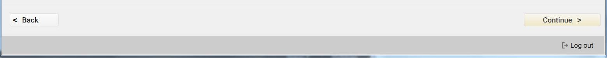 画像をクリックすると拡大表示され、Esc キーを押すとキャンセルします。
同様に、2 列目のバナーの楕円形のボタンをクリックすると、そのサブセクションが表示されます。各サブセクションの作業を完了してから、次のサブセクションをクリックして移動する必要があります。
 画像をクリックすると拡大表示され、Esc キーを押すとキャンセルします。
画像をクリックすると拡大表示され、Esc キーを押すとキャンセルします。
それぞれの楕円形のボタンの横にある小さな円形のボタンは、そのセクションのステータスを示します。
緑色のチェックマークはセクションが完了していることを示します。
緑色の目は表示中のセクションを示します。
鉛筆の付いたオレンジのアイコンは、処理中のセクションを示します。
一時停止記号の付いたオレンジ色のアイコンは、別のセクションを表示しているときに進行中のセクションを示します。
淡色表示された楕円形で、横に円形のボタンがない場合は、セクションがまだ開始されていないことを示します。
2 列目のバナーの先頭と末尾にある矢印を使用すると、これらのサブセクションをスクロールできます。
 画像をクリックすると拡大表示され、Esc キーを押すとキャンセルします。
画像をクリックすると拡大表示され、Esc キーを押すとキャンセルします。
2 列目のバナー項目に対して [はい] を選択すると、サブセクションがバナーに追加されます。
 画像をクリックすると拡大表示され、Esc キーを押すとキャンセルします。
画像をクリックすると拡大表示され、Esc キーを押すとキャンセルします。
プロファイル名を編集するには、名前の横の鉛筆アイコンをクリックします。
画像をクリックすると拡大表示され、Esc キーを押すとキャンセルします。
ホーム ボタンをクリックすると、いつでもホーム画面に戻れます。
画像をクリックすると拡大表示され、Esc キーを押すとキャンセルします。
ウィザード内で設定テンプレート ウィンドウに入力する際、他のプロファイルの作成時にも設定を使用できるようにするには、[再利用するために設定を保存] チェックボックスをオンにして、設定の名前を入力します。詳細については、「再使用するために保存」を参照してください。
II.設定
プロファイルを作成するには、StageNow Workstation ツールを開いてログインします。
[新しいプロファイルの作成] を選択し、ドロップダウン メニューからデバイスの MX のバージョンを選択します。このときの選択は、将来のプロファイルの構成時に保持されます。
最初は、誤ったバージョンを選択するとステージングが失敗する可能性があることを示す警告が表示されます。複数の対象デバイスに異なるバージョンの MX が入っている場合は、最も低いバージョンを選択します。このウィンドウのチェックボックスをオンにすると、それ以降は表示されなくなります。
eXML バーコードを生成するターゲット バージョンとして MX 11.3 を設定することをお勧めします。
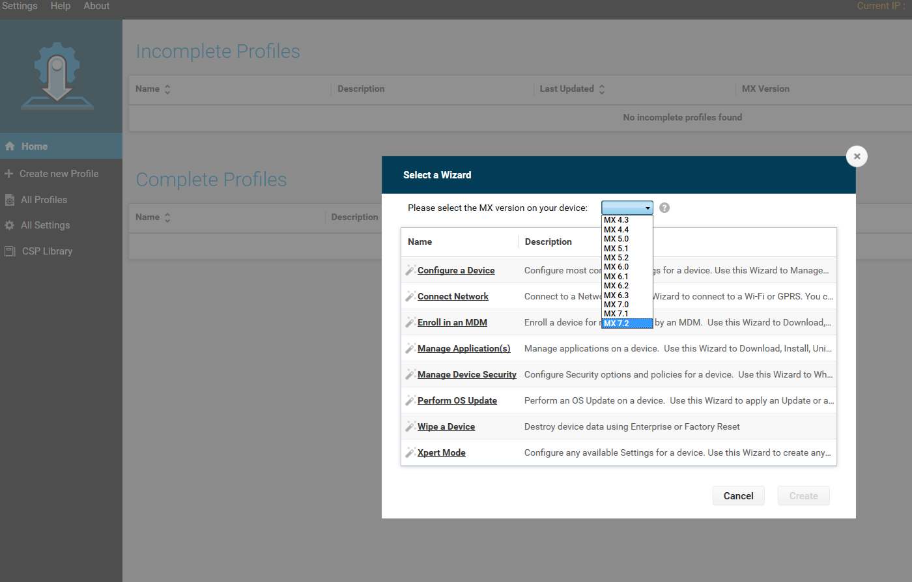 画像をクリックすると拡大表示され、Esc キーを押すとキャンセルします。
次のいずれかのウィザードを選択し、[作成] を選択します。
ウィザードの [StageNow 構成] セクションと [RD 構成] セクションを完了したら、次のセクションに進みます。一部のウィザードには [導入] セクションがありますが、その他のウィザードでは [確認] セクションに進みます。
MX の選択
該当するウィザードで MX 6.X を選択すると、ウィザードの最初のウィンドウに、ドロップダウン メニューから次のいずれかのオプションを選択するように求めるメッセージが表示されます。*「プロビジョニングしたいデバイスが、現在ネットワークに接続されていません。ステージングに使用するネットワークをこのプロファイルで定義します。」*「プロビジョニングしたいデバイスは、ステージングに使用されるネットワークにすでに接続されています。」 画像をクリックすると拡大表示され、Esc キーを押すとキャンセルします。
画像をクリックすると拡大表示され、Esc キーを押すとキャンセルします。
オプションを選択し、選択したウィザードの指示に進みます。
MX に関する注
- 前述の 2 番目と 3 番目のオプションは、ツールの [導入] セクションを使用するウィザードでのみサポートされています。
- StageNow 2.9 以降は、特定の StageNow バージョンにはない MX の追加機能を提供するプラグイン CSP をサポートしています。
- プラグイン CSP は
.zipファイルとして提供されます。このファイルは絶対に解凍しないでください。 - StageNow 管理者の PC の次のフォルダに、この
.zipファイルをコピーします。\Program Files (x86)\Symbol Technologies\Staging_Solution\SNCertFiles\
- プラグイン CSP が解凍された場合、または別のファイルとして配信された場合は、次の手順に従って
.zipファイルを作成または作成し直します。- PKZip または互換性のある圧縮ユーティリティを使用して、CSP とそれに対応する DSD ファイルを 1 つの
.zipアーカイブ ファイルに圧縮します。 - 新しいファイルに
[CSPname].zipという名前を付けます (「[CSPname]」を実際の名前に置き換えます。例:RfidMgr.zip)。 - このファイルを上記のフォルダにコピーします。
NOTE:[CSP ライブラリ] 画面に記載されているように、ファイルは絶対にドラッグしないでください。
- PKZip または互換性のある圧縮ユーティリティを使用して、CSP とそれに対応する DSD ファイルを 1 つの
- [CSP ライブラリ] 画面 で、[または、ファイルを選択] ボタンをクリックして、当該の CSP の
.zipファイルを選択します。 - プラグイン CSP のパラメータは、ステージング プロファイルを作成するための標準プロセスを使用して入手できるようになっています。
In case of trouble with Profiles that use a plug-in CSP,「トラブルシューティング」ページを参照してください。
 画像をクリックすると拡大表示され、Esc キーを押すとキャンセルします。
画像をクリックすると拡大表示され、Esc キーを押すとキャンセルします。
III.導入
ウィザードの [導入] セクションを使用して、プロファイルの動作を定義する設定のサブセットを指定し、これらの設定を導入サーバーに保存します。手順については、個別のプロファイル ウィザードを参照してください。
[導入] セクションは、[ネットワークの接続]、[デバイス セキュリティの管理]、または [デバイスのワイプ] ウィザードには表示されません。
[導入] セクションを含むウィザードでは、導入サーバーにアクセスして残りのステージング手順を取得するためのネットワーク接続を、デバイスが確立する必要があります。
 画像をクリックすると拡大表示され、Esc キーを押すとキャンセルします。
画像をクリックすると拡大表示され、Esc キーを押すとキャンセルします。
IV.確認
ウィザードの [確認] セクションで、選択内容を検証できます。
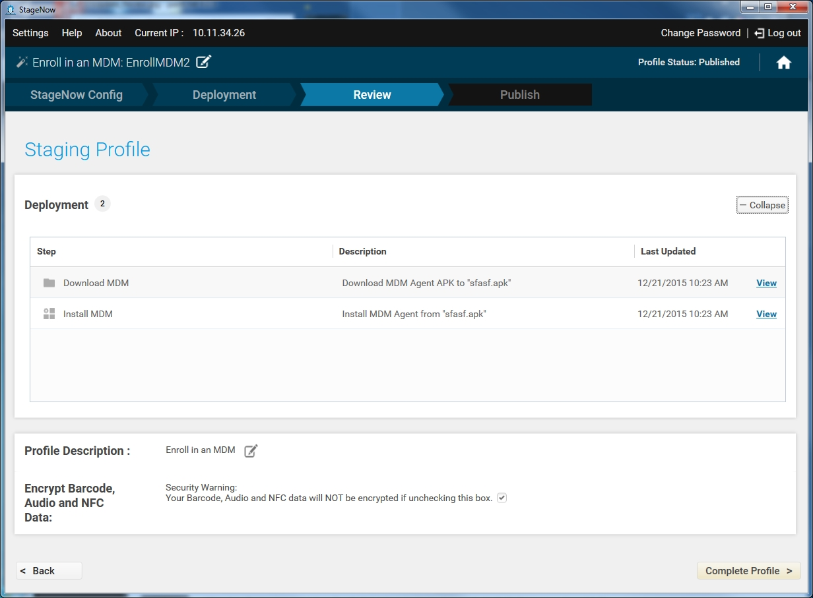 画像をクリックすると拡大表示され、Esc キーを押すとキャンセルします。
[展開] を選択して、StageNow 構成と RD 構成の設定を表示します。この設定リストには、次のフィールドがあります。
- ステップ - 管理者が設定を追加したセクションのステップ。
- 説明 - 設定に関するユーザー定義の "わかりやすい" 説明。
- 最終更新日時 - プロファイルが最後に更新された時刻。
- 表示 - クリックして設定を表示または変更します。
[変更] を選択して設定を変更します。
[プロファイルの説明] の横にあるアイコンを選択して、プロファイルの説明を入力します。
 画像をクリックすると拡大表示され、Esc キーを押すとキャンセルします。
画像をクリックすると拡大表示され、Esc キーを押すとキャンセルします。 説明を入力し、[保存] を選択します。
プロファイルのバーコードまたは NFC タグの中にあるエンコードされた機密データを保護するため、ステージング データの暗号化がデフォルトで選択されています。詳細については、「StageNow の暗号化」を参照してください。必要に応じてこのチェックボックスをオフにすると、容量を節約できます。
[プロファイルの完了] を選択して、[公開] ウィンドウに進みます。画面右上のプロファイルのステータスが [完了] になります。
V. 公開
ウィザードの [公開] セクションでは、ステージング方法を選択したり、プロファイル機能の方式をテストしたり、プロファイルをステージング オペレータから使用できるようにしたりすることができます。このウィンドウには、使用可能なプロファイル配信のタイプが一覧表示され、前回プロファイルがテスト、公開、およびステージングされた日時が表示されます。
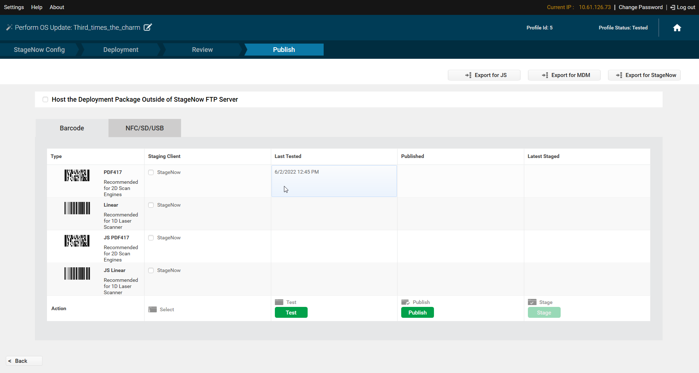 画像をクリックすると拡大表示され、Esc キーを押すとキャンセルします。
バーコード プロファイルのステージング
バーコード プロファイルをステージングするには、次の手順を実行します。
1.[バーコード] タブを選択します。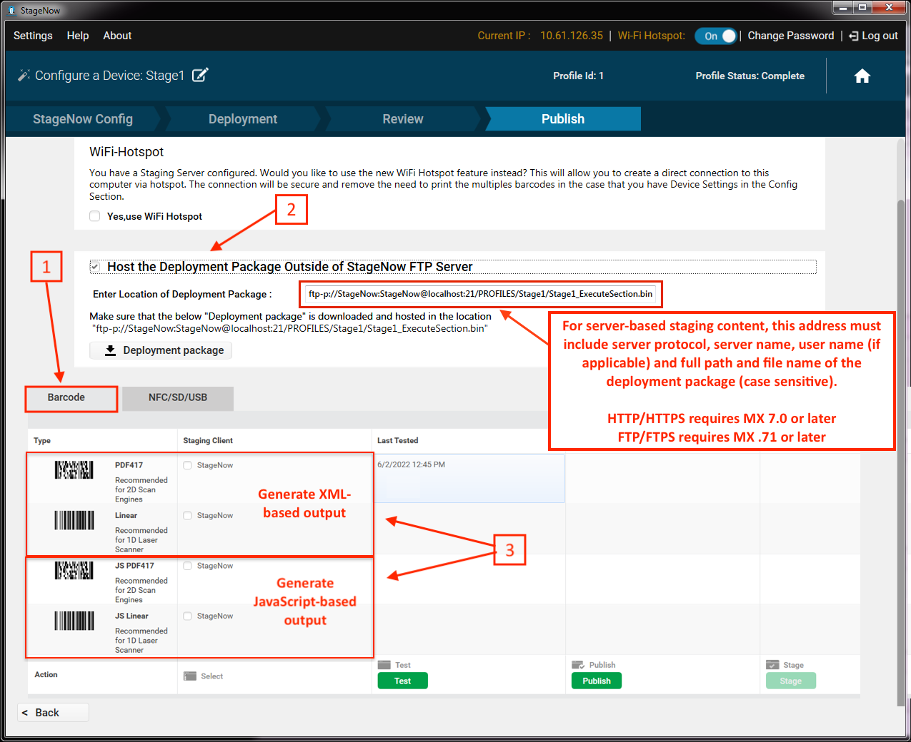 画像をクリックすると拡大表示され、Esc キーを押すとキャンセルします。
2.サーバーに保管されているコンテンツからデバイスをステージングするには、[StageNow FTP サーバーの外部に導入パッケージをホスト] をチェックし、ソース URI の構文を使用して、サーバーベースのコンテンツのサーバーのアドレスおよび完全修飾ファイル名 (パスを含む。上記の図を参照) を入力します。この構文の詳細や例については、『File Manager guide』の「ソース URI」および「例」のセクションを参照してください。この機能は、HTTP、HTTPS、FTP、および FTPS (FTP over TLS または FTP over SSL) プロトコルと、URL に組み込まれた資格情報の基本認証をサポートしています (MX 4.4 以降のデバイスでサポートされるのは FTP のみです。HTTP/HTTPS では MX 7.0 以降がデバイスに入っている必要があり、FTPS では MX 7.1 以降が必要です)。
展開用にプロファイルをエクスポートした後は、URI フィールドに含まれる情報を編集できません。詳細はこちら。
3.上の 2 行 (XML) または下の 2 行 (eXML) で PDF417 またはリニアのチェックボックスを選択して展開するバーコードのタイプを指定するか、すべて選択を選択してすべてのバーコード タイプをテストします。
eXML を選択する場合は、以下の重要な eXML ステージングに関する注意事項を参照してください。
4.公開する前にプロファイルの機能を検証するには、[テスト] を選択します。。これにより、テスト用のステージング バーコードの PDF が生成されます。ステージング デバイスのオペレータに対してプロファイルを使用可能する前に、プロファイルが意図したとおりに機能するかどうかをテストすることが強く推奨されます。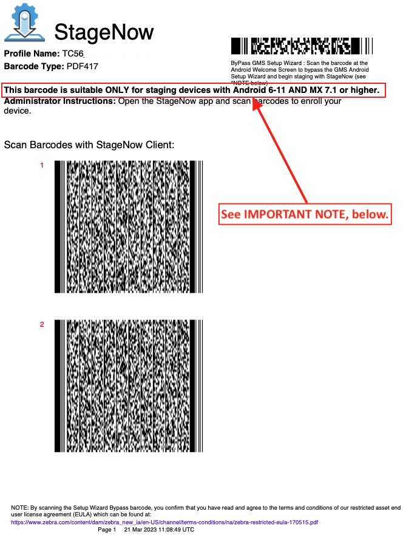 画像をクリックすると拡大表示され、Esc キーを押すとキャンセルします。
IMPORTANT NOTE:ここでのバージョン番号は、このシートのバーコードを使用するために Zebra がサポートする Android および MX の最小バージョンを示します。構成されている設定によっては、バーコードが古いバージョンを含むデバイスをステージングできる可能性がありますが、保証も推奨もされていません。
5.ステージング素材が適切に機能する場合は、[公開] を選択して、オペレータが使用する素材を公開します。管理者は、テストに成功したタイプのバーコードのみを公開し、他のバーコードについては準備ができたところで公開するように選択することができます。
6.オペレーター向けのステージング手順を入力し、[今すぐ公開] をクリックして続行します。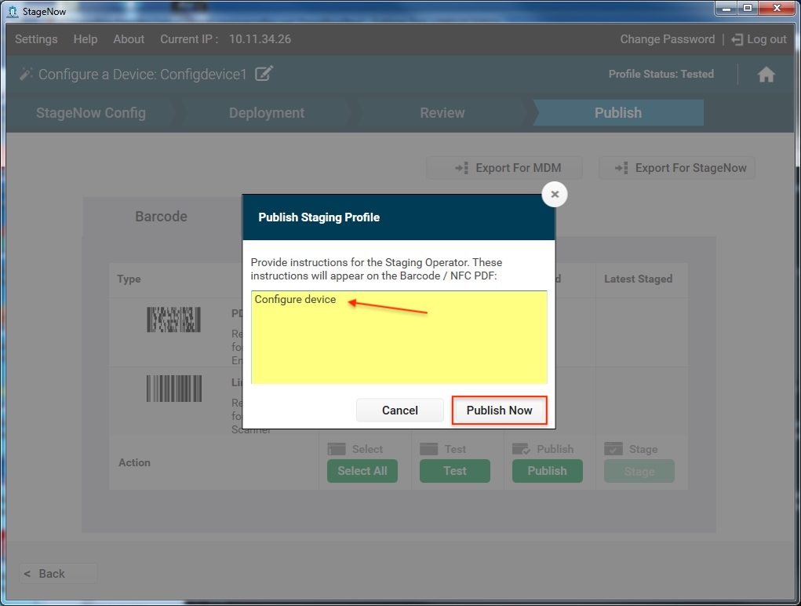画像をクリックすると拡大表示され、Esc キーを押すとキャンセルします。
7.プロファイルをステージングに使用できるようにするには、[ステージング] を選択して、ステージングの際にデバイスがスキャンできるステージング バーコードの PDF を生成します。「デバイスのステージング」を参照してください。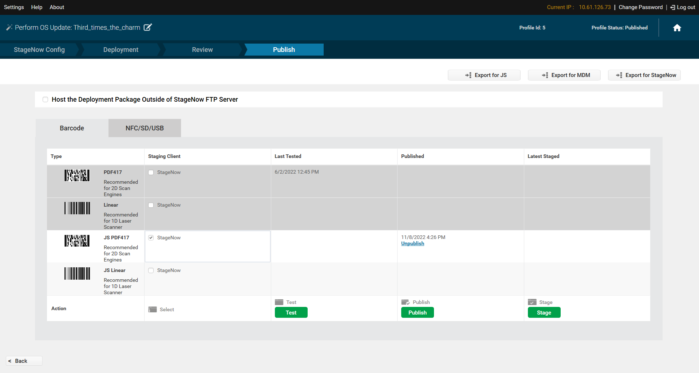 画像をクリックすると拡大表示され、Esc キーを押すとキャンセルします。
8.後で使用するためにプロファイルをエクスポートするには、[JS 用にエクスポート]、[StageNow 用にエクスポート]、[MDM 用にエクスポート] のいずれかのオプションを選択します。ステージング プロファイルのエクスポートも参照してください。
プロファイルの作成が完了しました。
プロファイルへのオペレータ アクセスを削除するには、[公開取り消し] を選択します。
eXML ステージングに関する注意事項
eXML バーコードを生成するには、MX 11.3 (以降) をターゲットにすることをお勧めします。
eXML バーコードをスキャンするには、デバイスに StageNow クライアント アプリ 11.02 (以降) が必要です。
MX 10.x (以前) を搭載したデバイスをターゲットとするプロファイルは、eXML バーコードを生成するように変更できません。
このようなプロファイルは、MX 11.3 (以降) をターゲットにするには、最初から再作成する必要があります。
eXML バーコードによる永続化は、Android 11 を実行しているデバイスではサポートされていません。。
NFC プロファイルのステージング
NFC または USB/SD カードでのステージングで使用する
.binファイルに含まれるデータは、2 つのバーコード PDF ファイルに相当するものに制限されています。ファイルの生成時に「ファイルが長すぎます」のようなメッセージが表示される場合は、プロファイル用に生成されたバーコードに必要な PDF が 2 つ以下になるまで、プロファイルの [構成] セクションの設定を [導入] セクションに移動して、ファイル サイズを小さくします。
NFC プロファイルをステージングするには、次の手順を実行します。
- [NFC] タブを選択します。
 画像をクリックすると拡大表示され、Esc キーを押すとキャンセルします。
画像をクリックすると拡大表示され、Esc キーを押すとキャンセルします。
公開する前にプロファイルの機能をテストするには、[テスト] を選択します。これにより、NFC タグがテスト用の
.binファイルとして保存されます。この手順はオプションですが、ステージング デバイスのオペレータに対してプロファイルを使用可能する前に、プロファイルが意図したとおりに機能するかどうかを確認することが重要です。ステージング素材が適切に機能する場合は、[公開] を選択して、オペレータが使用する素材を公開します。
オペレータに対するステージングの指示を入力します。
[今すぐ公開] を選択します。
ステージングでプロファイルを使用できるようにするには、[ステージング] を選択します。これにより、デバイスがステージングの際に読み取ることのできる
.binファイルとして NFC タグが保存されます。「デバイスのステージング」を参照してください。MDM または StageNow で使用するプロファイルをエクスポートするには、[MDM 用にエクスポート] または [StageNow 用にエクスポート] ボタンを選択します。「ステージング プロファイルのエクスポート」を参照してください。
プロフィールの作成が完了しました。
プロファイルへのオペレータ アクセスを削除するには、[公開取り消し] を選択します。
USB および SD カードでのプロファイルのステージング
StageNow 3.3 以降では、NFC ステージング プロセス中に生成された .bin ファイルを使用して、USB ドライブまたは SD カードからデバイスをステージングすることができます。
USB ドライブまたは SD カードからデバイスを自動的にステージングするには、次の手順を実行します。
- 前述の NFC プロファイル ステージング手順を使用して、
.binファイルを生成します。 - USB ドライブまたは SD カードに「Stagenow」というフォルダを作成します。
.binファイルを新しいフォルダのルート レベルにコピーします。- ストレージ デバイスを接続 (または挿入) し、ステージングする (新規またはエンタープライズ リセットされた) デバイスを起動します。
デバイス上のファイルからデバイスを手動でステージングするには、次の手順を実行します。
- 前述の NFC プロファイル ステージング手順を使用して、
.binファイルを生成します。 .binファイルをデバイス上の任意の場所にコピーします。- StageNow クライアントを起動し、[参照] ボタンをタップします。
- 手順 2 でコピーした
.binファイルに移動してタップし、ステージングを開始します。
Android SUW バイパスに関する注
- MX 9.0 を搭載したデバイスでは、すべての
.binファイルの処理によって [セットアップ] ウィザードがバイパスされます。 - MX 9.1 以降を使用するデバイスでは、処理にはセキュリティ チェックが含まれ、StageNow プロファイルが MX 9.1 以降を使用して作成された場合のみバイパスが発生するようになります。
- MX 9.1 以降を搭載したデバイスは、[Android セットアップ] ウィザードを自動的にスキップし、
.binファイルが見つかるとステージングを開始します。
詳しくは「SUW バイパスの制限」を参照してください。
外部ストレージからのステージングに関する注
- StageNow が、ストレージ メディアの名前とパスをプロファイルに書き込みます。同じメディア (名前/パスの変更なし) をデバイスに接続して、ホスト PC またはサーバーの代わりにステージング データのソースとして使用できます。
- デバイスのステージングを成功させるには、ステージングに必要なすべてのファイルが外部のステージング メディアに存在している必要があります。詳細は以下をご覧ください。
- SD カードに保存されているステージング プロファイルは USB よりも優先されます (両方とも存在する場合)。
USB ステージング プラットフォームに関する注
プロファイル作成時にソースへのアクセス方法として USB メモリを使用する場合、以下のことに注意してください。
SDM660 プラットフォームのデバイスの場合、USB ベースのストレージ パス (マウント ポイント) の前には、次のように/storage/usbotg/が付きます。 画像をクリックすると拡大表示され、Esc キーを押すとキャンセルします。
画像をクリックすると拡大表示され、Esc キーを押すとキャンセルします。
8956 プラットフォーム (以前) のデバイスでは、USB ベースのストレージ パス (マウント ポイント) の前には、次のように/storage/xxxx-xxxx/が付きます。xxxx-xxxxは、各 USB メモリに割り当てられた固有の識別番号です。
 画像をクリックすると拡大表示され、Esc キーを押すとキャンセルします。
画像をクリックすると拡大表示され、Esc キーを押すとキャンセルします。
この一意の番号を表示するには、ホスト PC に USB メモリをマウントし、ターミナル ウィンドウで次のコマンドを実行します。adb shell cd /storage/
一意の USB ストレージ番号を使用するための要件を回避するには:
- StageNow でメディア タイプとして [USB] を選択します。
- USB メモリをホスト PC にマウントします。
ワークステーションが USB メモリにドライブ文字 (通常は [D:\]) を割り当て、ホスト PC から USB メモリにファイルをコピーします。 - プロファイルの作成を終了し、通常どおりステージング バーコードを生成します (詳細は以下)。
- デバイスをステージングする準備ができたら、USB メモリをターゲット デバイスに接続し、バーコードをスキャンします。
ファイルは、プロファイルの指示に従って USB メモリからデバイスに転送されます。
サーバーレス ステージング
ステージング (.apk、.pfx、.bin など) に必要なファイルは、プロファイルの作成中に USB または SD カード ストレージ メディアにコピーでき、ステージング中のデバイスによって使用されるため、ステージング プロファイルの実行時にデバイスが FTP サーバーまたは PC ホストに接続する必要がなくなります。
ステージングに外部ストレージを使用するには:
- ホスト ワークステーションに USB または SD カードをマウントします。
- FileMgr をプロファイルに追加します。
- [ターゲット ソース アクセス方式] で、[デバイス ファイル システム内のファイル] を選択します。
- [ソース アクセス方式] で、[デバイス ファイル システム内のファイル] を選択します。
- ローカル コンテンツ ソース セレクタが表示されます (以下を参照)。ソースを選択し、[OK] をクリックします。
 画像をクリックすると拡大表示され、Esc キーを押すとキャンセルします。
画像をクリックすると拡大表示され、Esc キーを押すとキャンセルします。 - [ソース パスとファイル名] フィールドがプロファイルに正しく入力されていることを確認します。これには、画像の例 と同様の一意の ID 番号 (USB ストレージの場合) が含まれます。画像をクリックすると拡大表示され、Esc キーを押すとキャンセルします。
- プロファイルを完了し、バーコードを生成します。
デバイスをステージングするには: - メディアをデバイスに接続し、マウントします。次に:
a. バーコードをスキャンしてステージング プロファイルを適用します。
b. デバイスで StageNow クライアントを開き、デバイス上の.binファイルに移動してステージングを開始します。
ステージング プロファイルのコピー
既存のプロファイルをコピーして新しいプロファイルを作成するには、次の手順を実行します。
プロファイルの横にある [コピー] アイコン (下図を参照) を選択します。
 画像をクリックすると拡大表示され、Esc キーを押すとキャンセルします。
画像をクリックすると拡大表示され、Esc キーを押すとキャンセルします。 プロファイルの新しい名前を入力し、[保存] を選択します。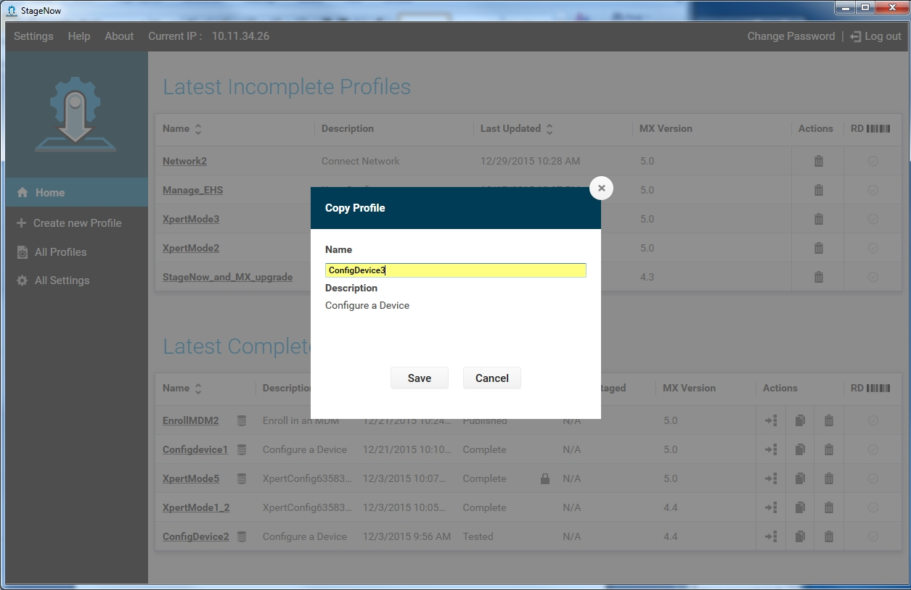 画像をクリックすると拡大表示され、Esc キーを押すとキャンセルします。
プロファイルが正常にコピーされたことを示すウィンドウが表示されます。[OK] を選択します。
新しいプロファイルの編集方法については、次のセクションを参照してください。
ステージング プロファイルの編集
プロファイルの作成が完了する前に StageNow をアップグレードすると、進行中のプロファイルが正しく機能しない可能性があります。StageNow を更新する前に、完了していないプロファイルを完了することをお勧めします。
プロファイルを編集するには、次の手順を実行します。
ホーム画面からプロファイルを選択します。
ウィザードのナビゲーション UI を使用して、更新する設定を見つけます。「ウィザードの操作」を参照してください。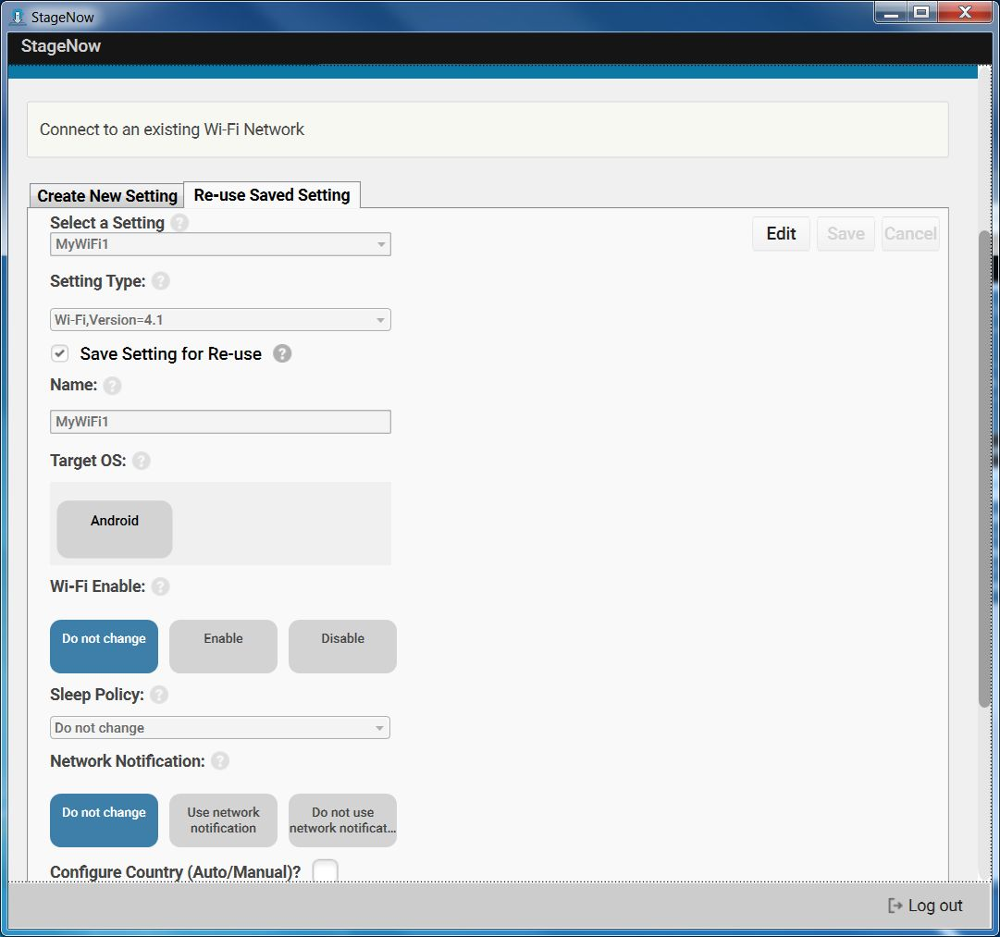 画像をクリックすると拡大表示され、Esc キーを押すとキャンセルします。
[編集] を選択して、フィールドの更新を有効にします。
必要な変更を行い、[保存] を選択します。
[続行] を選択して、ウィザードを続行します。
[確認] セクションで、[完了したプロファイル] を選択して [公開] セクションに移動し、更新されたバーコードまたは NFC タグを生成します。
ステージング プロファイルのエクスポート
未完了のプロファイルはエクスポートできません。
StageNow または MDM 用にプロファイルをエクスポートする方法:
プロファイルの横にある [エクスポート] アイコンを選択します。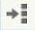 画像をクリックすると拡大表示され、Esc キーを押すとキャンセルします。
 画像をクリックすると拡大表示され、Esc キーを押すとキャンセルします。
画像をクリックすると拡大表示され、Esc キーを押すとキャンセルします。 MDM 用にエクスポートするか、StageNow 用にエクスポートするかを選択します。
 画像をクリックすると拡大表示され、Esc キーを押すとキャンセルします。
画像をクリックすると拡大表示され、Esc キーを押すとキャンセルします。 [StageNow 用にエクスポート] を選択する (プロファイルがロックされて変更不可になり、他の管理者から詳細が見られなくなる) 場合は、チェックボックスをオンにして [OK] を選択します。
プロファイルの場所を選択し、[保存] を選択します。プロファイルが正常にエクスポートされたことを示すウィンドウが表示されます。
[OK] を選択します。
RD 設定はエクスポートされず、インポートすることはできません。
すべてのプロファイルのエクスポート
完了したプロファイルのみがエクスポートされます。
すべてのステージング プロファイルをエクスポートするには、次の手順を実行します。
[すべてのプロファイル] を選択します。
 画像をクリックすると拡大表示され、Esc キーを押すとキャンセルします。
画像をクリックすると拡大表示され、Esc キーを押すとキャンセルします。 [プロファイルのエクスポート] ボタンを選択します。
画像をクリックすると拡大表示され、Esc キーを押すとキャンセルします。 プロファイルをロックして変更不可にし、他の管理者から詳細が見られないようにするには、チェックボックスをオンにします。
[OK] を選択します。
 画像をクリックすると拡大表示され、Esc キーを押すとキャンセルします。
画像をクリックすると拡大表示され、Esc キーを押すとキャンセルします。 必要に応じてデフォルトを変更し (拡張子は
.zipのまま)、プロファイルを保存する場所に移動して、[保存] をクリックします。プロファイルが正常にエクスポートされたことを示すウィンドウが表示されます。[OK] を選択します。
完了したプロファイルはすべてエクスポートされ、.zip ファイルに保存されます。
ステージング プロファイルのインポート
プロファイルをインポートするには、次の手順を実行します。
ホーム画面の左側のペインで [すべてのプロファイル] をクリックします。
画像をクリックすると拡大表示され、Esc キーを押すとキャンセルします。 [プロファイルのインポート] ボタンをクリックします。ナビゲーション ダイアログが表示されます。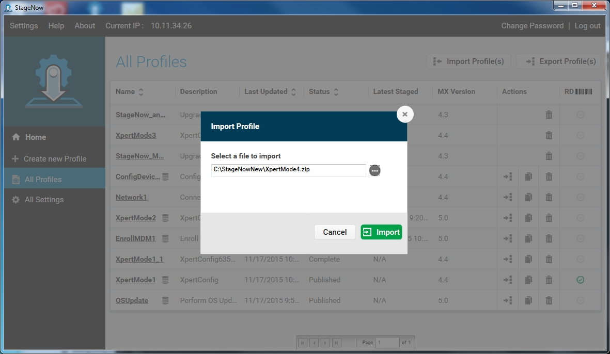 画像をクリックすると拡大表示され、Esc キーを押すとキャンセルします。
インポートするファイルに移動し、[インポート] ボタンをクリックします。プロファイルが正常にインポートされたことを示すダイアログが表示されます。
[OK] をクリックします。インポートされたプロファイルが [プロファイル] リストに表示されます。エクスポート中にロックされたプロファイルは、インポート後にロック アイコンとともに表示されます。
 画像をクリックすると拡大表示され、Esc キーを押すとキャンセルします。
画像をクリックすると拡大表示され、Esc キーを押すとキャンセルします。
ステージング プロファイルをインポートすると、その設定のカウンタがゼロにリセットされます (下記を参照)。
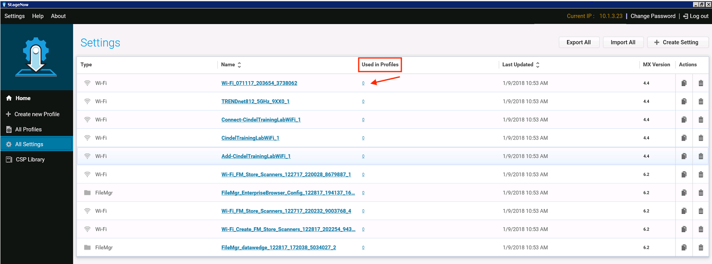 画像をクリックすると拡大表示され、Esc キーを押すとキャンセルします。
ステージング プロファイルの削除
プロファイルを削除するには、次の手順を実行します。
プロファイルの横にあるゴミ箱のアイコンを選択します。

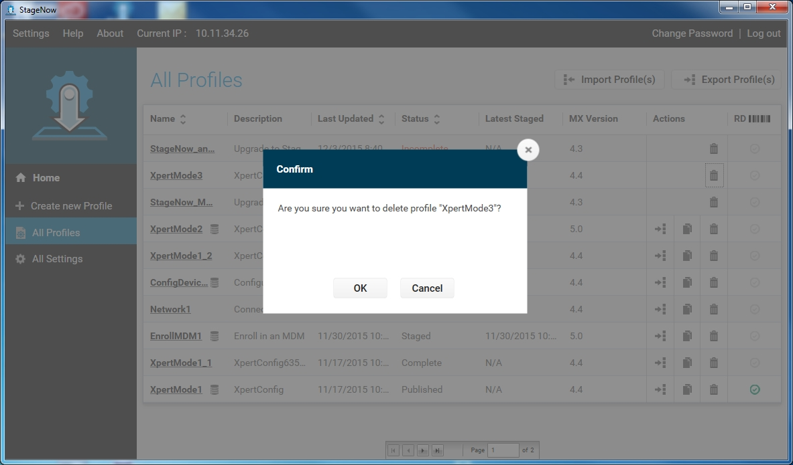 画像をクリックすると拡大表示され、Esc キーを押すとキャンセルします。[OK] を選択して削除を確定します。
プロファイルが正常に削除されたことを示すウィンドウが表示されます。[OK] を選択します。
プロファイルのアップグレード
StageNow 2.3 (以降) では、リリース済みまたはベータ版の StageNow バージョンで作成されたプロファイルを最新の StageNow バージョンにアップグレードできます。